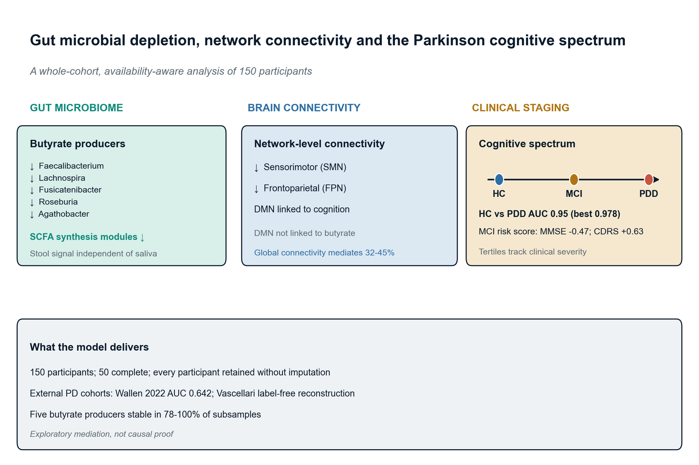
Graphical abstract
Study overview: cohort, availability-aware integration and biological read-outs.
Reference figures from the Parkinson gut–brain study: study design, staging, biomarkers, external validation and ecological structure.

Study overview: cohort, availability-aware integration and biological read-outs.
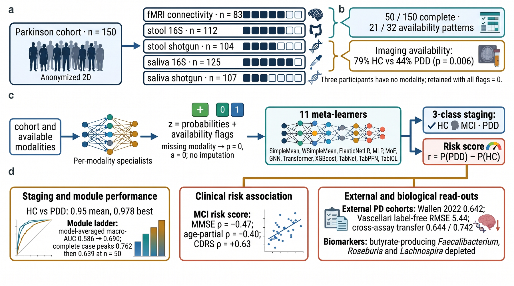
Cohort, per-layer availability, two-stage integration and downstream read-outs.
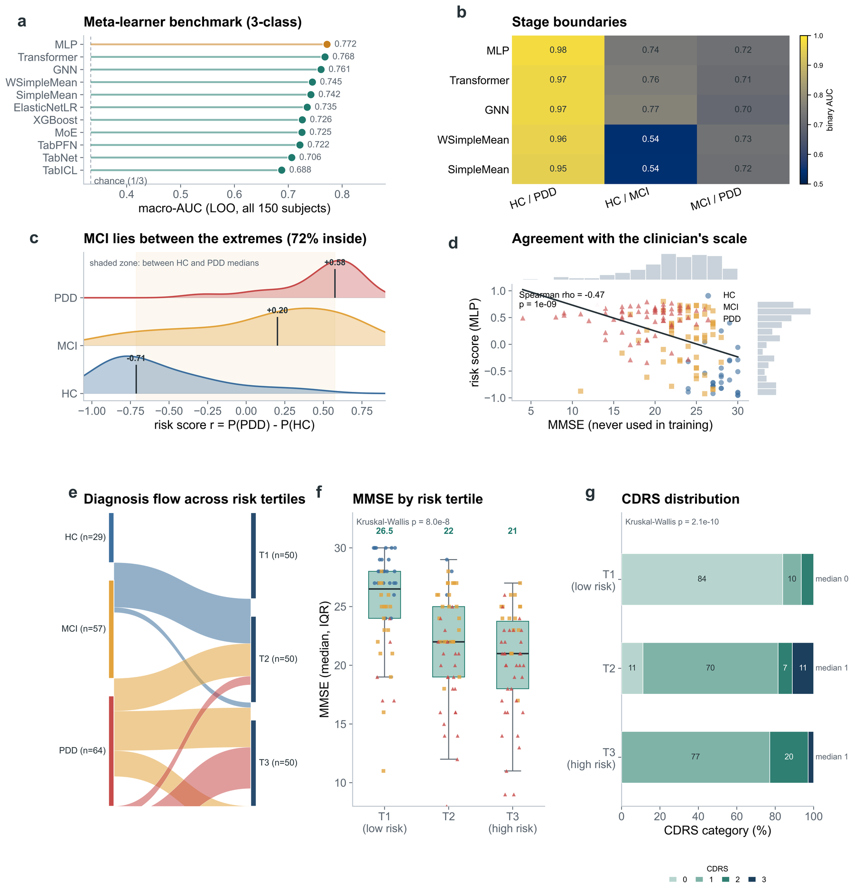
MCI lies between HC and PDD; the risk score tracks MMSE and CDRS.
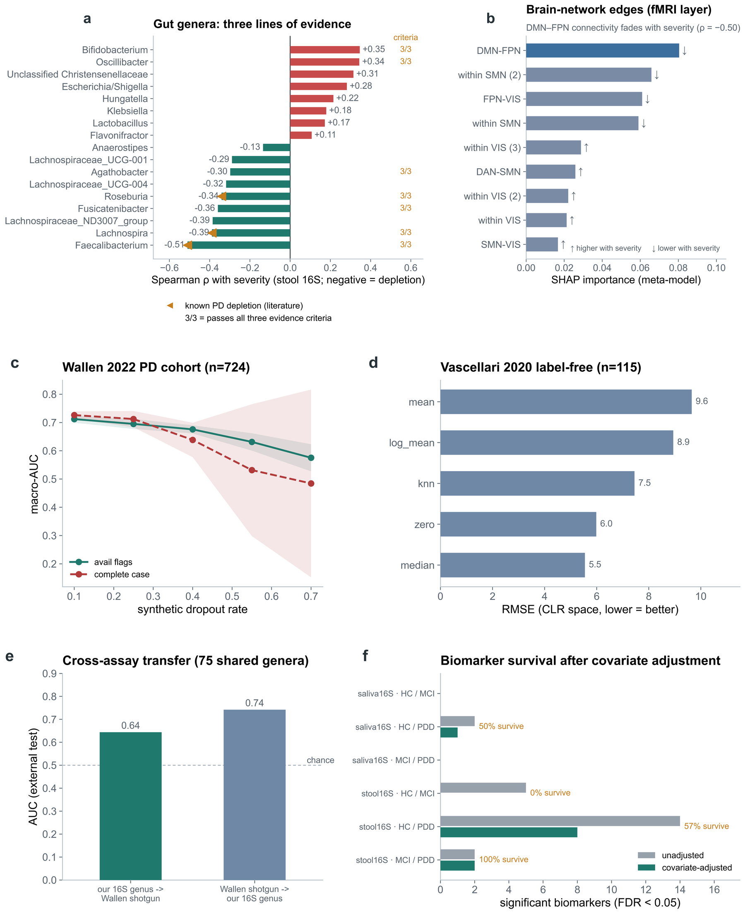
Biomarker landscape and external validation in Wallen 2022 and Vascellari 2020.
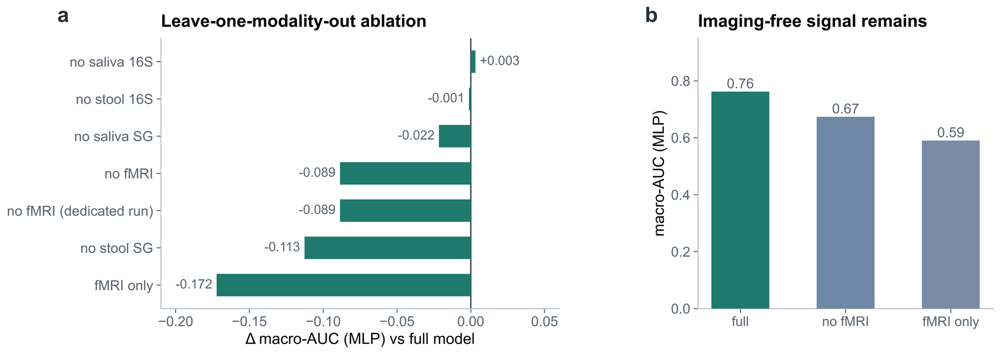
Stool shotgun and imaging removal cause the largest losses; microbiome-only retains signal.
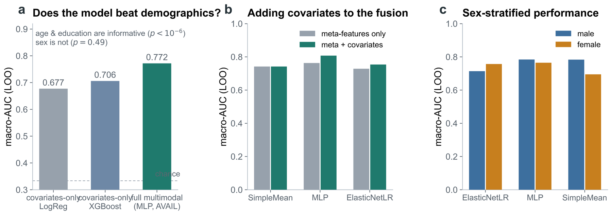
The multimodal model exceeds demographics; added covariates change performance marginally.
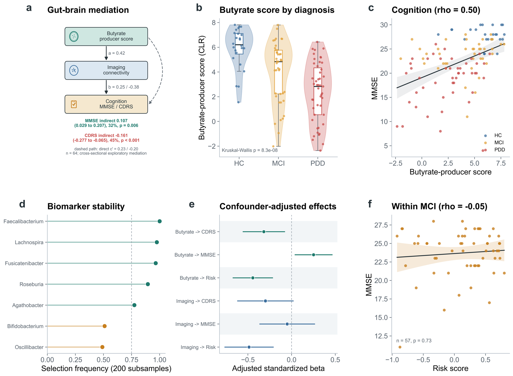
Gut-brain mediation, biomarker stability and confounder-adjusted associations.
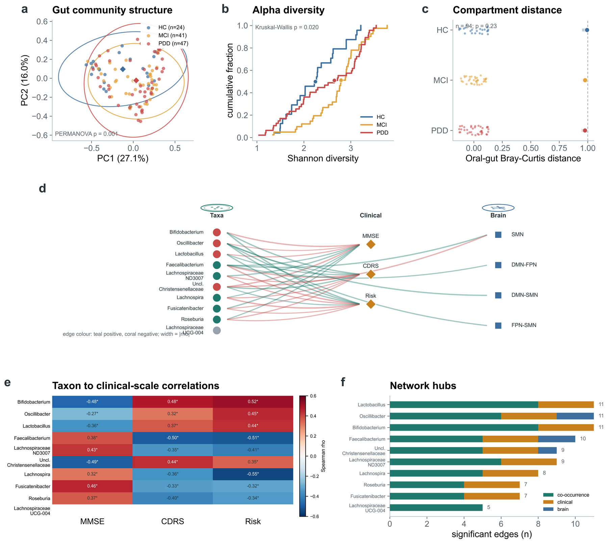
Ecological structure and a bipartite taxon-clinical-brain network.
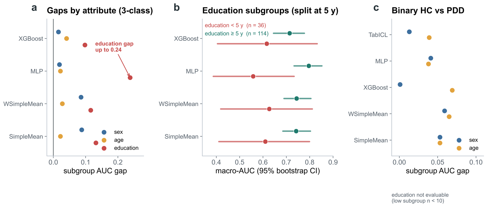
Fairness sensitivity across sex, age and education subgroups.
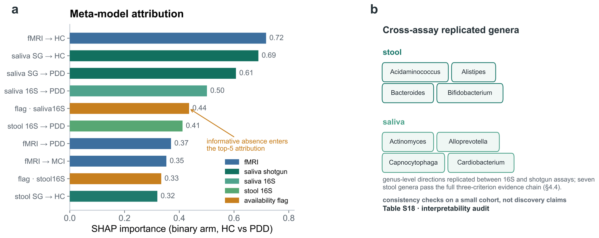
Interpretability audit showing informative absence and cross-assay replication.
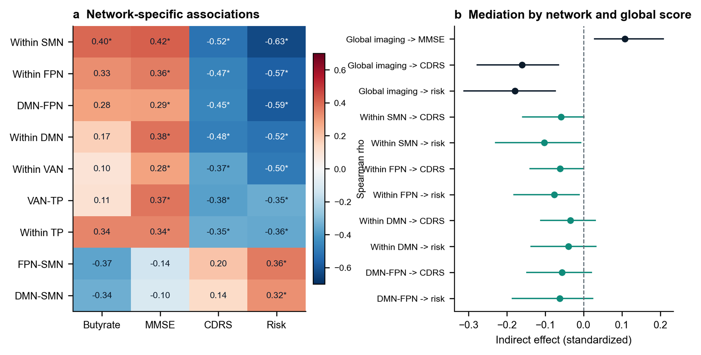
Sensorimotor and frontoparietal associations and network-specific mediation.
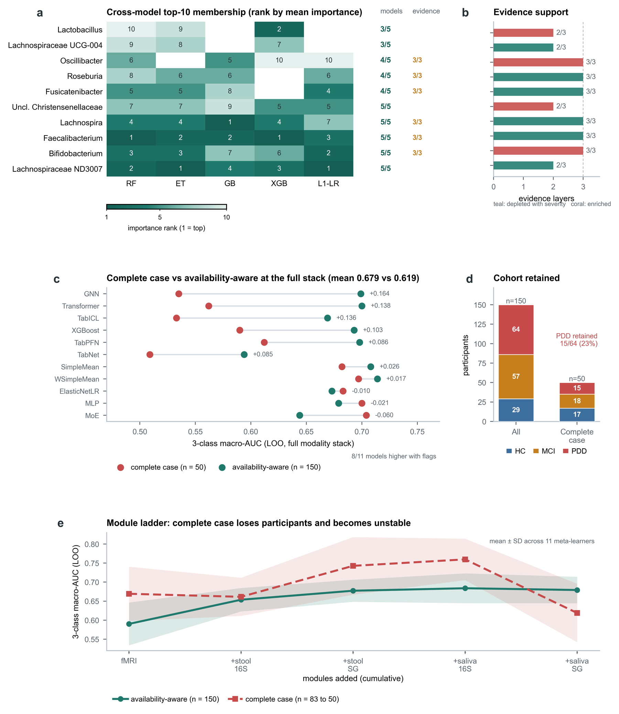
Cross-model consensus and the cost of complete-case analysis.